1 / 7

💻 TEKNOLOGI
Dua raksasa berkolaborasi: gadget + jaringan = solusi bisnis satu pintu
MoU-nya diteken kemarin di Jakarta. Kenapa ini rame? Karena ini nentuin masa depan cara perusahaan kerja. Geser →
2 / 7
🤝
Kesepakatannya apa sih?
PT Samsung Electronics Indonesia dan PT Telkom Indonesia resmi teken Nota Kesepakatan (MoU) di Jakarta pada 9 Oktober 2026 buat ngembangin solusi enterprise end-to-end.
MoU ini berlaku selama satu tahun.
3 / 7
📦
Isi paketnya: Samsung bawa gadget, Telkom bawa jaringan
Samsung bawa Galaxy Enterprise Edition, HP rugged, Samsung Knox, Samsung DeX, Galaxy AI, dan IoT. Telkom bawa konektivitas, infrastruktur, plus layanan digital ekosistem TelkomGroup.
Lima area awal yang bakal digarap: digitalisasi pekerja lapangan, mobilitas enterprise, operasi berbasis IoT, produktivitas AI, dan smart display.
4 / 7
✍️
Siapa yang tanda tangan?
Dari Samsung: Lee Hun, Vice President Director Samsung Electronics Indonesia. Dari Telkom: Arfianto Ramadhian, VP Global Strategic Partnership & Synergy Telkom.
Yadi Prayitno (Head of MX Business Samsung) bilang transformasi digital butuh lebih dari sekadar adopsi teknologi — perusahaan butuh ekosistem yang nyambungin perangkat, konektivitas, dan keamanan dalam satu solusi.
5 / 7
🎯
Sasarannya siapa?
Selama setahun, mereka bakal petakan use case prioritas, jalanin Proof of Concept (PoC), dan nyiapin penawaran bareng buat pelanggan bisnis.
Sektor targetnya: manufaktur, pendidikan, healthcare, pemerintahan, dan financial services. Masalah yang dijawab: perusahaan selama ini harus integrasikan sendiri perangkat, keamanan, konektivitas, dan cloud dari penyedia beda-beda.
6 / 7
📱
Terus sekarang udah jalan?
Baru tahap penjajakan — jadi belum ada produk jadi. Tapi langkahnya konkret: PoC dan penawaran bersama bakal disiapin selama masa MoU.
Rame juga di sosmed: carousel berita ini viral di Instagram tech media dan grup trading ritel soroti potensi bisnis AI/IoT-nya buat korporasi.
7 / 7
🤔
Efeknya ke lo apa?
Buat lo yang kerja kantoran, masa depan kerja makin mobile dan aman: HP kantor terkelola Knox, AI bantuin kerjaan, semuanya dalam satu paket. Buat yang nyari kerja, skill AI + IoT makin laku. Dan investor? TLKM salah satu emiten yang dipantau — berita kayak gini bisa jadi sentimen.